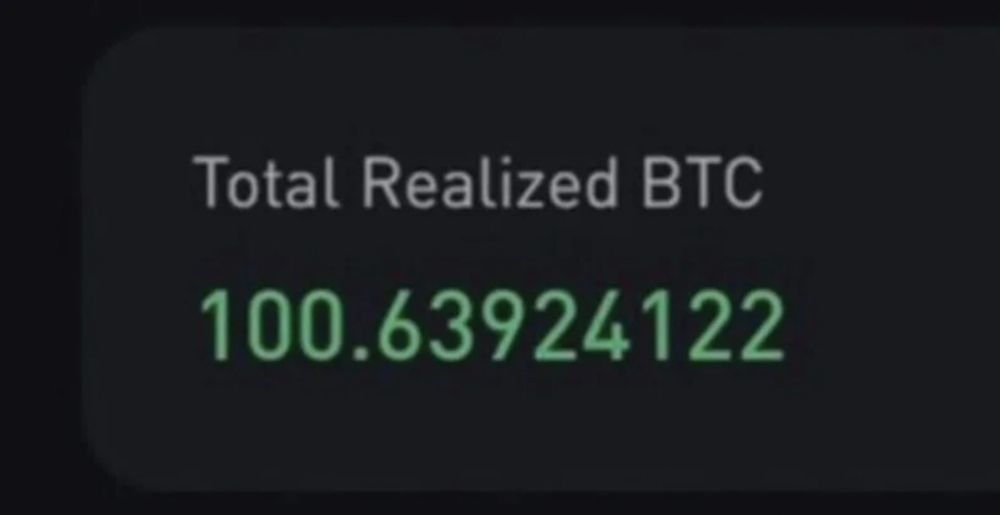
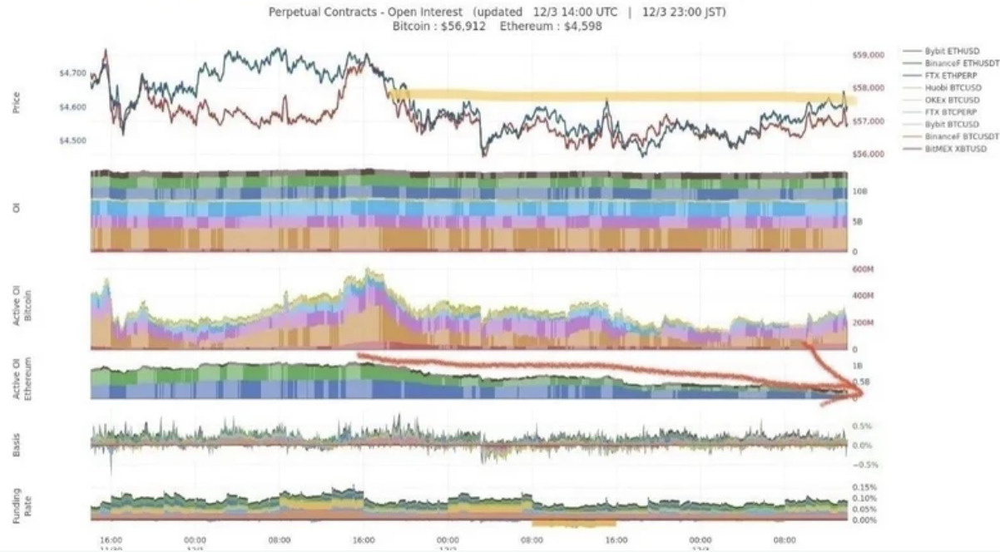
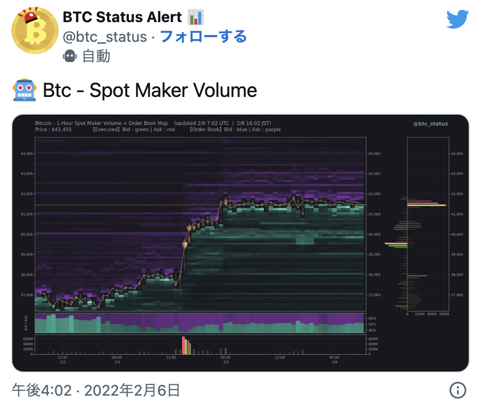
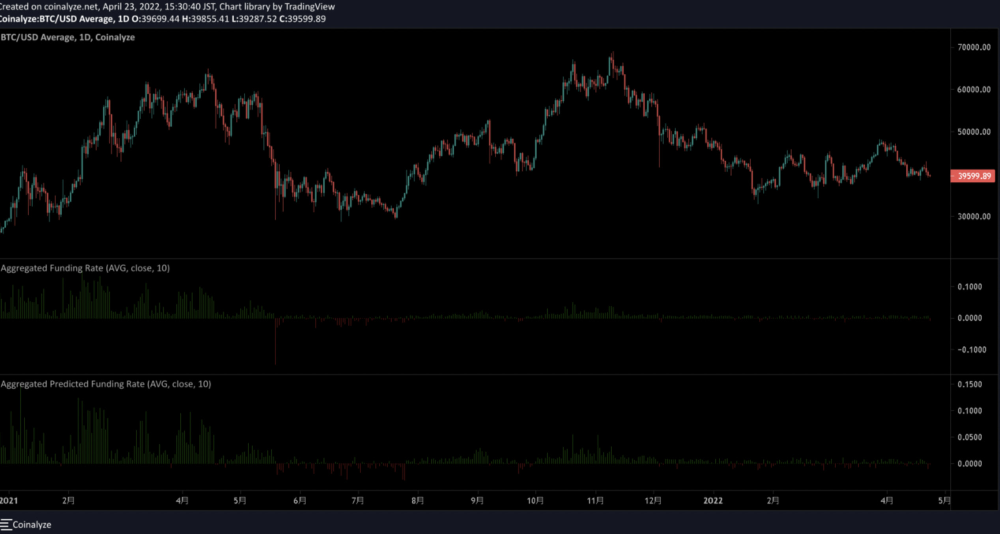

---------------------------下げ相場の解説とoi.精算.金利.先物について---------------------------

---------------------------------------------相場環境---------------------------------------------
- トレーディングビュー（https://jp.tradingview.com/）
- トレーディングライト（https://tradinglite.com/）
- イナゴフライヤー（https://inagoflyer.appspot.com/）
- BTC情報アラート（@btc_status)
- Crypto Quant (https://cryptoquant.com/)
- coinalyze (https://jp.coinalyze.net/)
- Whale Alert (@whale_alert)
- DECOCHART (https://note.com/joetheace107/n/n247a67d99afc)
無料で使えるものが多いですね。いつも開発者の方には感謝しております。別にこれだけじゃないんですけどメインを載せています。スマホ１枚でトレードされてる方もいますがそれは一部の天才かエルサルバドル大統領くらいでしょう。（笑）せめてこれくらいは見ておきましょう
裁量ではその時その時で見ているものだったり場所が違います。
58,000ドルから42,000ドルまで落ちた下落時が分かりやすいと思ったので、その時の実際のトレード状況の振り返りとその後の考察を書いていきます。
--------------------------------------------12月1日---------------------------------------------
＊環境認識＊
雰囲気としては2017年バブルを彷彿とさせるような状況で待ちに待ったビットコイン先物ETF承認もあり、年末こそは11月につけた69,000ドルを超えて100,000ドル抜ける説が出ていたが、次のETFはイーサリアムとの思惑からETHは4,700ドルの先月のATHに今にも届きそうでOIは1Bとかなり高水準だった...
ビットコイン先物ETFとは？
このETFなんですが、記事にもあるように承認されたのは現物ではなくて皆さん知っての通り先物のETFなのです。2018年にCMEにビットコイン先物が上場して天井になった記憶は古くないはず。先物には、その名の通り期限があるので、いつまでもガチホはできません。期限が来ると必ず決済されるのです。
(このビットコイン先物ETFは現物ではないので当然、差金決済)
つまりガチホができないため、定期的に買い替える必要があるのです。
期限切れになる前に今持っている商品を売って、次の商品に乗り換える。この一連の流れがロールオーバーと呼ばれるものです。そのため、納会に近づくと期近が売られやすくなります。これが定期的におきていて、月末付近まで売られて月初から買われていくみたいな動きがよくありますが、この動きの原因の一つがこれです（ほかにもOPの清算日や難易度調整が被ってたり理由は多々ある）
乗り換えの動きを警戒して納会までは買いが入りづらく、納会を挟んだ土日はヨコヨコで月が替わる1.2日前から月初買いを狙った買いが入るみたいなパターンで去年は月末月初にロング狙っている人も多かったです。
--------------------------------------------------------------------------------------------------------------------------------------------
OIとは？
基本的な概念は上のサイトが解説してくれているので、そちらを見てもらえればと思います。
OIを見るうえで気にしてほしいのは、どれくらいの量溜まっているのか？という点。基本的にロングとショート1:1でOIが1になるためどれくらいの量が溜まっているのかを見ることによって参加者のやる気を感じられる。OIが溜まっていれば溜まっているほどポジションがたくさん積まれているということであり、どちらかに大きく動きやすい時でもある。逆にOIが清算を巻き込んで空っぽになった状態などでは、みんながポジションを手仕舞いしたタイミングにもなるので、そういう清算がでたタイミングでロングするのが実は美味しいエントリーポイントだったりする。(こういうところを各自で過去のデータを遡って検証してみるといい)
ほかにもレンジ抜けたときにOIはついてきているかとか、トレンド転換かショートカバーかの判断など相場の過熱度を計るためによく使われている。
この12月1日はETFのOIが1B超えていた。
ビットコインにはさほどOIが入らず、イーサリアムの方にOIが流れている。資金循環的な動きもみられ、4,600ドル付近まで来ており三角持ち合いを上抜けしたことからもう一段上を見込んだ参加者が入ってきているのが分かる。ETH/BTCも節目の0.08を挟んだ攻防。ビットコインの上値が重たくなるとイーサリアムのほうに資金が流れるというバブルの典型的なパターン。 ETH/USD.USDTは見る人は多いがETH/BTCを見ないと本当に意味がないので売り遅れたり過度な上げについていったりとしてしまいがち。
OIがグングン入ってきているときは、基本ショートはしないようにしているが、このようにボラもあるのにOIが入ってこないときに売るタイミングを計っていく。
--------------------------------------------------------------------------------------------------------------------------------------------
月末買いの恩恵も受け、月初からビットコインは60,000ドルを超えれるかという状況だが、まずは11月26日のパウエルのテーパリング前倒し発言などからBTCは59,000ドルから今までレンジだった55,000ドルを割れて53,500ドルまで落とされた。すぐに59,000ドル付近まで戻したが10月以降ずっとサポートとして機能していた60,000ドル付近だし、チャートの形状だけ見てもここを戻せない場合長かった上昇トレンドも終わりかな～とそんな感じでみてた。イメージとしてはこの5月の黄色丸くらいの感じ。
（あくまでチャートの形だけ）
2020年からずっと継続した金融緩和相場が終わりテーパリング&利上げタームになるので納税売り（翌年）もあり株も仮想通貨も（リスク資産全体）が売られていくことは想定していた。ハイテク関連株のナスダックが売られるとビットコインも連れ下げしたりしますね。また、2021の1月よりアメリカ買いから始まった事からFOMC転換を今では誰もが見ているが今年よりその傾向は微妙な値動きになっている。
正直ここまで価格が上がったのは金融緩和なしでは語れないくらいこれで支えられてきた感が強いので、その金融緩和が終わるとなれば風向きも変わる可能性がある。なので、ショートを取りに行こうと思っていた。
チャートより気になっていたのが実際の板の状況でMaterial Scientist氏の発言にあるように流動性が薄くなっていた。パウエルのスピーチで今まで55,000ドルを支えていた板が今度は60,000ドルに蓋をしにきた。
雰囲気はイケイケだが実際のオーダーは売り転換している。（こういう厚い板が出てきたときは、相場のターニングポイントになることが多々あり、抜けると大きく伸びるが、なかなか抜けづらいポイントであることは過去の動きを参照に。)この時まだETH先物スイングのロングは持っていたので雲行きが怪しくなってきたかなーと思っていた。
この辺から売るイメージしかしてなかったけど、買い支えの板も多かったので、実際のオーダーは59,000ドルから上に、と60,500ドル付近の2分割で指値を置いてタイミングを待つことにした。どこでエントリーしていいかわからないときに、参考になるのがIV（インプライドボラティリティ）と呼ばれるオプション市場参加者の想定する将来の予測値。ここには日足と週足の上限下限レベルが表示されています。これは過去の高値安値などの価格変動率から計算されるヒストリカルボラとは異なる。
59,000ドルから上に、と60,500ドル付近の2分割で。これはIVの上限あたりなのでETHがグーンと伸びてくれたら刺さるイメージで全部刺さっても61,000ドルを超えたら損切する予定だったけど思ったより刺さらず。。
--------------------------------------------12月2日---------------------------------------------
＊環境認識＊
昨日まで１Ｂ溜まっていたＥＴＨのＯＩが半分の０．５Ｂまで減っている。たった１５０ドルしか動いていないのに高値圏でＯＩが減るということは今まで積み上げられてきたポジションが解消されていっているということであり、これ以上、上の価格を目指せないと思ったプレイヤーがどんどん降りている。ということから弱気のサインということが読み取れる。（上昇の期待度が下がるイメージ）
次に気になっていたのが、BINANCEのロング比率が80%を超えていたこと。5月の60,000ドルの高値を付けた時ですら75%くらいが天井になっている。このロング比率が過度に偏ると仕掛ける側も仕掛けやすい状況になり、今までイケイケどんどんの落ちたらロング（ひたすらbythe dip）相場になっていたので、これだけロングに偏っていると落ちたら早いと感じていた。
その上、６０,０００ドルより上の売り板が厚くなって、５０,０００ドル付近の板が薄くなり、昨日よりさらに蓋をされている。（上は厚いのに、下はスカスカ）センチメントは悪化している。１０,０００ドルの以上の下落を見込んでいたので、ショートを撃つタイミングが整いつつあった。しかし、ぎりぎりのタイミングまで引きつけたかった
---------------------------------------------12月3日--------------------------------------------
＊環境認識＊
引き続き60,000ドルという上値が重い展開が続く、、。買い板が薄くなって売り板が厚くなっていた。1日から1Bも積みあがっていたETHのOIが昨日の時点で半分になっていたのに、さらにその半分に減っている。価格は横ばいなのにOIがどんどん減るということは資金が抜けていっていることを意味している。ここで世間のイケイケムードとのギャップを感じた。
BINANCEロング比率を見ても未だ80%健在の上、Top/Global Ratio（+の緑色の状態がTop Traderで、ーの赤色の状態がGlobalTraderのほうに傾いているということを意味している。）がー4であり、大口より小口のほうがよりロングに傾けてる状況であった。この辺から見ても、ショート有利な状況になっているのは明らかだった。

昔からBTCを触っている人は知っていると思うが、2017年の天井の時に続き、2021年の5月に天井を付けた際も、BTCが天井更新してから1ヶ月ヨコヨコ（4週間）後にETHが天井更新（アルトバブル）からの半値以上戻しの崩壊までが1セットでトレンドができている。そのこともあり、ETHがどのタイミングでATHしてくるのかというところを注視していたのだが売り板も厚く、RR的にも売りを狙う選択肢しかなかった。
ETHを4372.95ドルからショート＆スイングで持っていたロングを半分利確。
SPOTで60,000ドルを損切ラインにして、この時ビットコインも売り増し。
BTCは3月先物売り増しして
後はこの日は相場を見守るしかなかった。
3月先物を売った理由は、スワップ手数料がないのと、SPOTと3月先物の乖離率が10月をピークに11月の高値更新したときは、3月先物は全然買われてなく、右肩下がりで先に底値を割って、12月に入ってもSPOTより3月のほうが売られていたため。（SPOTと先物では温度差が違った）
ビットコインのSPOT価格しか見ていないとこういうところに気づけないのだが、期限付き先物との乖離率や限月間スプレッドなどは日頃から見ておきたい指標の一つである。
白ラインがビットコインの価格でローソク足が限月間スプレッド。10月21日をピークに右肩下がり。11月のビットコインのATHの時にもSPOT価格はダブルトップを付けたが、限月間スプレッドは既に先導して下落していた。SPOT価格がふわふわしてる時も内部の動きはしっかりと出てる。
--------------------------------------------12月4日--------------------------------------------
＊環境認識＊
50,000ドルを割り込むとロングのストップを今にも狩りそうなところ… 少し落ちてきているが、常に上が蓋されている状況で価格は下落。まだまだ上昇トレンドが続く場合、チャート的には30,000ドルからのサポートラインがある場所ではあるが、買い板がなく、ask/bid Ratio（売り板と買い板の比率）が5月の暴落水準まで売り板が積まれている(こういう状況はリバ狙いじゃなく落ちる瞬間の方が圧倒的にリスクが低くてRRが高いトレードができる)
下図の赤丸。
Material Scientist氏のTwitterより引用
前日のIVラインだが、大口のテザー売りもあり、かなり売り込まれ早朝には52,000ドルまでのヒゲ（流動性が薄いため、大口の投げですぐヒゲが出たりするのも流動性の薄い相場の特徴）をつけて54,000ドル付近まで戻している。
それでもなお、BINANCEのロング比率は増えていた。これは価格が下落しているが、それを押し目だと思ってナンピンしているプレイヤーが多いということになる。さらに大口より小口のほうがポジションを抱えている。大口の動向ばかり気にする人もいるが、本当にわからない相場で大口についていくより間違っているプレイヤーの逆を行くほうが信頼度は高い。Twitterなどで逆神を見ている人がいるのもそれと同じ理由である。

しかし、昼には52,000ドルもとまらず、50,000ドルを一気に割り込み週足のIVラインも貫通し、42,000ドルまで暴落した。
この時ようやくBINANCEのしこりになっていた、積みあがったロングポジションが吐き出され、10000ドル以上の暴落となった。
今回は下落時において積み上がり過ぎたロングポジションの清算と板の流動性が非常に薄い局面で月初買いなどナンピンして立ち向かった人を一掃する結果となった。
やはり板やOIやLS比率、先物乖離などを見ることでチャートの形状やフラクタルだけでは見えない部分が見えてくる。（ロウソク読みができるのが大前提で自分は水平やロウソクでは明らかに拾えない売れないそう言うところでレバはかけない)
ロウソクに関してはこれ見てね。↓

軸はプライスアクション.ロウソク.水平に置いて指標を混ぜている感じなので過度なバイアスはかけないかからないトレードを心がけています。
今では、BTC情報アラートがこのようなHeatmapを無料で提供してくれているのでぜひ有効活用してほしい
実際の板の状況と価格別出来高を一目で把握できるのとbid/ask比率も表示してくれている。これらを見ることで、さっきのようなトレードも簡単にできるようになり少しでも板の雰囲気がわかるといろんなアイデアが浮かんでくる

1番下の紫と緑のゾーンがbid/ask比率でこれが50%で中立（お互いが殴り合っている状況）
緑が長くなり60%,70%になってくるとそれだけ買い板が多いということであり、節目で強めにサポートされている場合等に多く見られる。
逆に緑が短く紫が長くなって40%,30%になると相対的に売り板の方が多く、買い板が少ない状況になるのでスコンと落ちやすい状況。今回はこっちのパターン。
------------------------------------------------------------------------------------------
ここまで下げ相場でトレードするときに気を付けるポイントや注意点を書いてきたが、上げ相場ならどうする？となった人も多いと思うので、軽く上げ相場についても触れてみる。
あくまで、過去はこれで取れてたという話になるのだが、実際に自分が見ていたところを中心に書いていく。基本的には上げ相場でも下げ相場でもOIや金利をみながら、Liquidationに合わせてエントリーする。
まず、上げ相場は基本ショートカバーから始まることが多い。レンジで味をしめたショート勢が一気に買戻しをせまられることによりロスカットを巻き込みながら上昇する。
2週間弱の三角の持ち合いの最終局面。ちなみにビットコインは昔から持ち合いやレンジの終盤になるとライトセーバーが頻発することは頭に入れておきたい。レンジからトレンドへの転換を見極めるためにOIの増減の確認はマストである。
OIが増えるということは、既存のプレイヤーがさらにポジを積み増ししているか、新規の参加者の参入のどちらかになるので資金流入。
OIがヨコヨコで価格もヨコヨコの時は1番手の人から2番手の人へポジションを受け渡し中。
OIが減って価格がヨコヨコなら利確と損切が重なっているときであり、資金流出。
OIが減って価格が上がっているときはショートの巻き戻しであり、資金流出。
つまりOIが増えていっているときは勢いがある。と判断することができる。
OIが白色の線を超えたところから、レンジブレイクした!と判断した人たちがショートを切ったところでOIは黄色丸のヒゲで騙しとなり一気に減少するとともに価格は上昇。OIが減って価格が上がるということは、その上昇はショートカバーであり、ある程度ロスカットを巻き込んだ後、再度下落するといった一時的なものになることが多い。
しかし、レンジの最終局面でのショートカバーはトレンドの起点になることも多く、そこからOIが増えて価格が安定しだすなら安心してついていくこともできるが、騙しのショートカバーでOIが減り、更にイナゴロンガーも投げさせられる展開になると清算を巻き込んでどんどんOIが減っていくのでそうなるとレンジ継続となる。ので大きな足の水平をみたりと。OIは相場がどこまでいけるかの燃料であり、飛行機に例えると、十分な燃料を持って飛行体制に入らないと途中で失速して墜落してしまうようなものだと思ってもらえるとわかりやすいと思う。
まずはOIが積まれているかどうか、過去の高値を抜けてきているか？というところから見ていく。
上の水色のラインに注目してみてほしい。プライスは42000近辺の売り圧に押さえ込まれているがOIは前回の高値を超えてレジサポ転換している状況。こういった状況では、ロングで付いていきやすく過度にFRが行き過ぎてない限り上抜けしやすい状況といえる。ここでマイナス乖離になっているとロングを引っ張りやすいパターン。過度にFRが行き過ぎているとデルタニュートラルというロングと同数ショートすることにより1:1の状況を作り価格変動リスクなしに偏っている金利だけ取る手法のポジションをとるプレイヤー等も増え上値が重たくなりやすい傾向にある。
では、過度な金利とはどの程度なのか？
基本は8時間ごとに0.01%で、1年間でだいたい10%くらいになるように設定されているんですが、BYBITなどの養分の多い取引所ではバブル時になると8時間ごとに0.2%くらいのFRになってたりしてました。（落ちてるお金を拾う的なnoteを某BOTTERさんが無料公開して、一時期これでデルタニュートラルが流行った時代があるくらいですw）
さすがにこれだとロングしにくいですよね？時間とともにどんどん上げの値幅もボラはあれどスイングなんて到底無理です。高金利を払い続けて、気づいたら金利でマイナスなんてこともよくあります。
スキャルピングの場合なら需給なので判断材料は板や出来高だけでも全然いいんですが、スイングのポジを取るときはこの時間の概念がすごく重要になってきます。
一度ポジションを持つと長めに持つので、そのポジションをどのくらいまで持っていられるか。といったところを考える必要があり、値段だけでエントリーできるものではないのでトータル的なものをみないといけない
ファンディングレートはポジションの偏りを意味するので、今だけの状況を見るんじゃなくて、いろんな取引所を監視することでどこの取引所が養分になっているのか？等を考えることが大事でヒストリカルベースで慣らしてみて過熱しているかどうかの判断に使うのが正解。
さっきも言ったが、マイナス金利が続くとロングしている人は金利をもらえる状況になり、ショート側が金利を支払い続けることになるので、過去のボトムの傾向からもマイナス金利の時はローカルボトムになりやすい。下のチャートはビットコインの日足とFRを並べたものですが、緑がプラスで赤色がマイナスFR時なんですが、赤色が続く時にツッコミショートを長く持つといずれ焼かれるというのは過去を振り返ってみると一目でわかる。
仮にロングができなくても、長くショートを持つべきポイントではないことが分かりますよね。

マイナス金利が続き突っ込み買いに突っ込んだショートが巻き戻され上昇していく前の2月の直前の様子をBTC情報アラートで確認してみたのが下👇(マイナス金利が過ぎるとこんな感じで赤いのでわかりやすい)
FRが軒並みマイナス（赤色）で次の8時間の予測金利であるNextFRもマイナス。通常時に10%くらいついているYieldも当然マイナスに振り切っている。
期日を残した黄色の線で引いたHOUBIの期日付き先物もindex価格を割っており、バックワーデーションになっている。BTCの先物価格は通常、現在の価格から先に行くほどプレミアム（時間）が含まれ値段が高くなるのですが、今回はその逆で今現在の価格の方が高くなり、次の期日までの価格の方が低い状態になっています。これはこの先も下がるだろうと予測しているプレイヤーが多いことを表しており、期日には先物はindex価格で清算されるので、ここから残り4日間で、さらに先物が突っ込み売られindex価格との乖離が更にマイナスに広がることがない限りこのポジションは利益にならない。SQ日が近づいてくると、清算日までまたず、利益確定しときたいプレイヤーも増えるため、数日前に反転していくこともあり、個人的にはSQまで持ち切ることはあまりない。
37280（先物0204）< 37301（index）現在1月31日
緑の●で示した期日先物の年換算金利が3%しかついていない。
アメリカ10年債利回りですら2～3%である。なのにビットコインが3%…
明らかに売られすぎを示している。
このような悲壮感が数字で確認できたら背を決めてロングに絞ってみる。
ただし、このような状況はあくまで異常な状態であり、急変動することもあるのでレバレッジの掛けすぎに注意してポジションを取ろう。
------------------------------------------------------------------------------------------
過去のプライス、FR、OI、出来高とチャートの形状以外にも見るところはたくさんあるが、それらでタイミングを計り、他人の清算に合わせてコツコツエントリーするようにしている。大事なのはいかに人が投げたところで買えるか？というところ。スキャなら板見て止まりそうなところで他人の清算を拾っていくスタイルである。
上げ相場の押し目買いで一番機能しやすいのは、底値を切り上げている前提でテクニカル的に意識される直近水平ラインを割ったところの清算が出たタイミングでするロングエントリー。
後は、どこまでロングを引っ張るのかというところだが、出来高や精算を見つつ、もつと決めたら、段階的に背を近くしてトレーリングぽくポジションを持ち続け、利を伸ばす秘訣。
終わり。